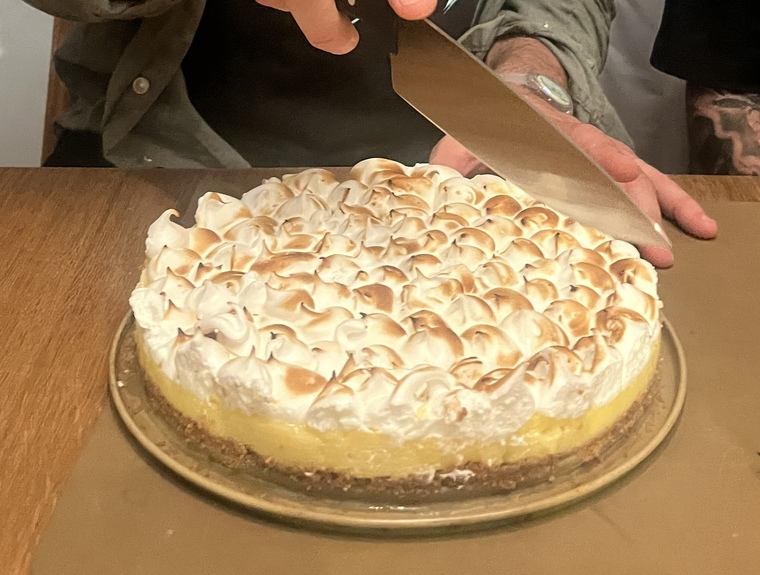

Lemon Tart
Ingredients
6×
- 75 g of sugar
- 2 whole eggs
- 3 egg yolks
- 200 ml of lemon juice
- lemon zest
- 105 g of melted butter
- 25 g of cornstarch
- 200 g of speculoos biscuits
- tart dish
- 3 egg whites
- 1 pinch of salt
- 150 g of icing sugar

Preparation
Step 1
Beat 75 g of sugar with 2 whole eggs and 3 egg yolks.
Step 2
Add 200 ml of lemon juice, some lemon zest, 30 g of melted butter, and 25 g of cornstarch diluted in a little water. Bring to the boil, stirring constantly, until it thickens.
Step 3
Crush 200 g of speculoos biscuits and mix them with 75 g of melted butter. Spread over the bottom of a 20-25cm tart dish and refrigerate for 30min.
Step 4
Make a meringue with the 3 egg whites and 1 pinch of salt.
Beat the whites to stiff peaks and gradually add 150 g of icing sugar.
Step 5
Assemble.
Step 6
Put the tart under the oven grill for a few minutes, or brown it with a blowtorch.